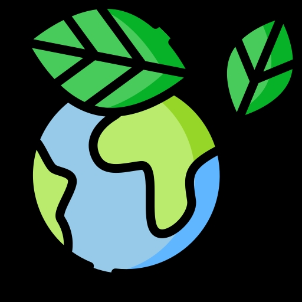
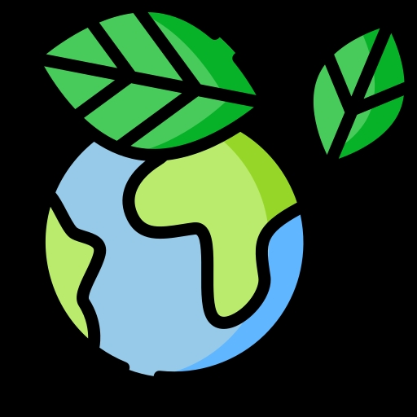

Проект: "Екологія Планети"
ЕКОЛОГІЯ ПЛАНЕТИ ЗЕМЛЯ
ЕТИЧНИХ ВІДНОСИН "ЛЮДИНА-ПРИРОДА"
Здоровя планети в наших руках!
Економічний підхід до концепції стійкого розвитку заснований на теорії максимального потоку сукупного доходу Хікса-Ліндаля, який може бути зроблений за умови, принаймні, збереження сукупного капіталу, за допомогою якого і здійснюється цей дохід. Ця концепція передбачає оптимальне використання обмежених ресурсів і використання екологічних — природо-, енерго- і матеріало-зберігаючих технологій, включаючи видобуток і переробку сировини, створення екологічно прийнятної продукції, мінімізацію, переробку і знищення відходів. Однак при вирішенні питань про те, який капітал повинен зберігатися (наприклад, фізичний або природний, чи людський капітал) і якою мірою різні види капіталу є взаємозамінними, а також при вартісній оцінці цих активів, особливо екологічних ресурсів, виникають проблеми правильної інтерпретації і розрахунку. З'явилися два види стійкості — слабка, коли мова йде про не зменшуваний в часі природний та виробничий капітал, і сильна — коли повинен не зменшуватися природний капітал (причому частина прибутку від продажу невідновних ресурсів повинна спрямовуватися на збільшення цінності відновлюваного природного капіталу).
 
